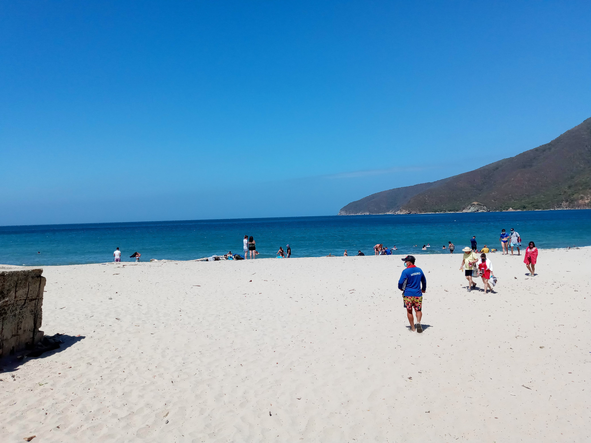
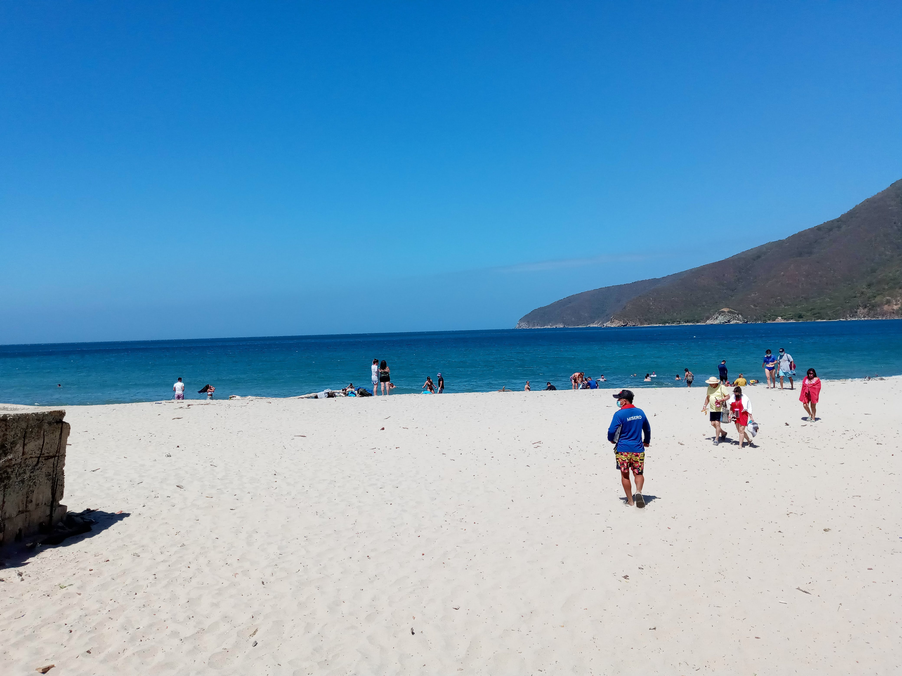
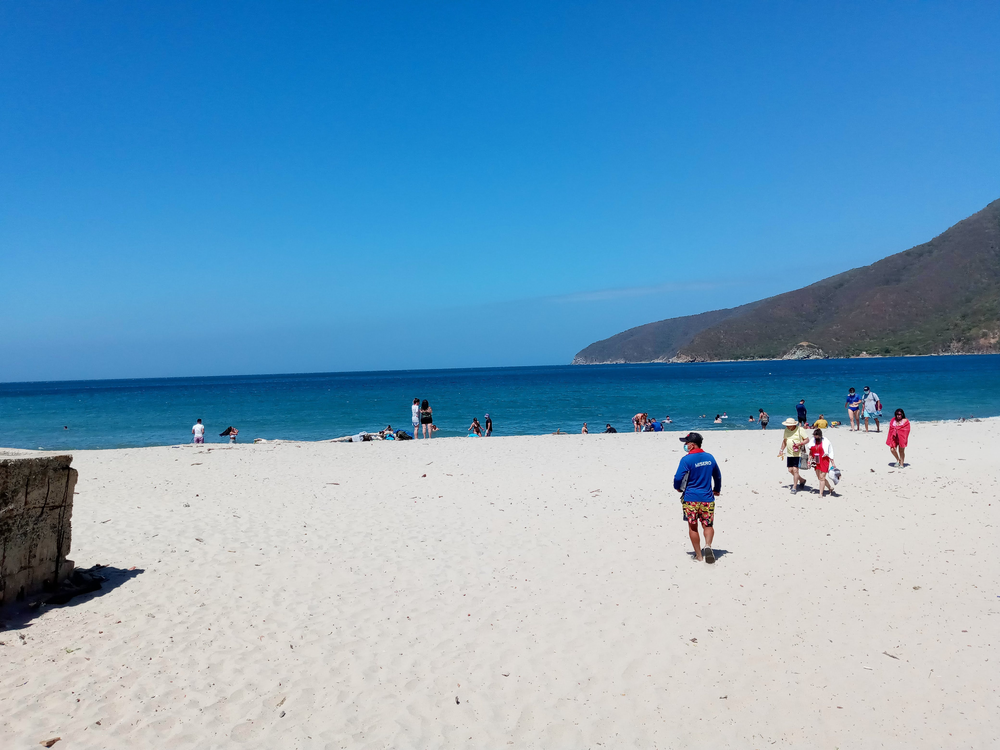

Santa Marta es, sin duda, uno de los lugares obligados de los amantes de la brisa y el mar. En lo personal, la primea vez que vi el mar, desde la hermosa Playa El Rodadero, quedé enamorado. Se ha convertido en mi destino predilecto vacacional. Cada vez que tengo la posibilidad de ir, siempre estoy pensando en regresar.
Aunque es una ciudad con una amplia historia, la variedad de playas que posee enamora a cualquiera. Cuando el clima lo permite, basta con visualizar el mar para experimentar una variedad de tonalidades azules y la arena, diferente en cada una de las playas, es algo totalmente disfrutable.
A continuación, comparto algunas fotos de varias playas de Santa Marta, lugar que vale la pena conocer.


Esta es una de las regiones más grandes de Colombia. Posee una gran diversidad cultural y ambiental. Además de un sin fin de lugares por visitar.
En seguida presento algunas imágenes de dos parques representativos de la región. Mientras que uno se encuentra ubicado en un clima cálido, el otro goza por estar ubicado en un clima cálido.
Es uno de los departamentos agrícolas más importantes de Colombia. Históricamente, el departamento de Boyacá se ha caracterizado por ser el responsable de cultivar varios de los alimentos de mayor demanda de la canasta familiar del país.
Sin embargo, en términos de turismo, esta región se ha caracterizado por sus alumbrados navideños, los cuales propician un espacio agradable para compartir en familia y, de paso, visitar la región.
Las siguientes imágenes fueron tomadas el pasado diciembre de 2021, en algunos pueblos de esta región.